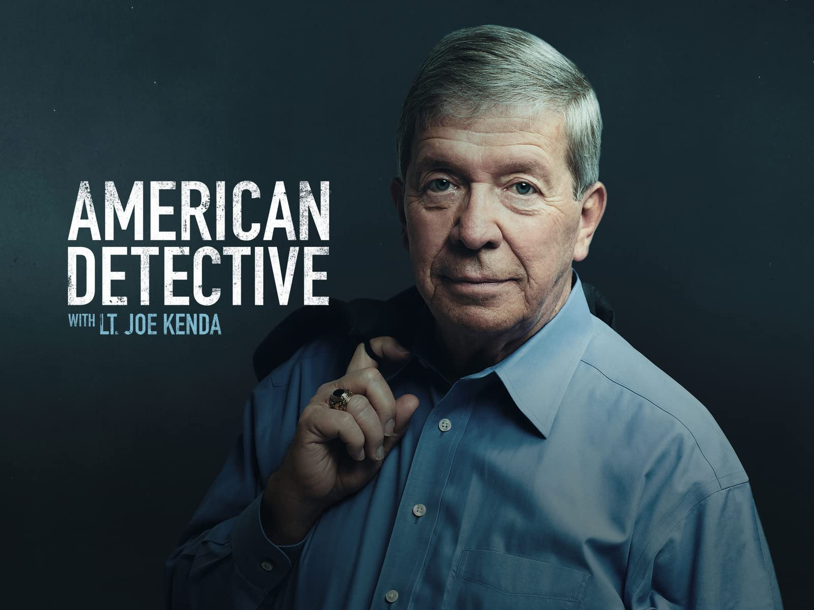
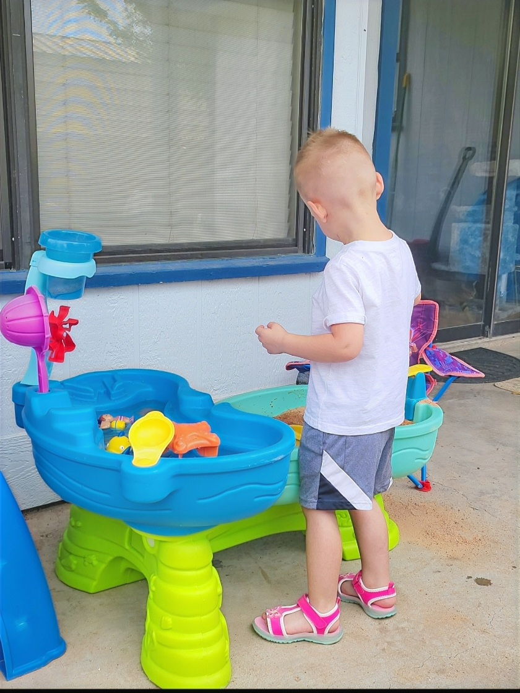
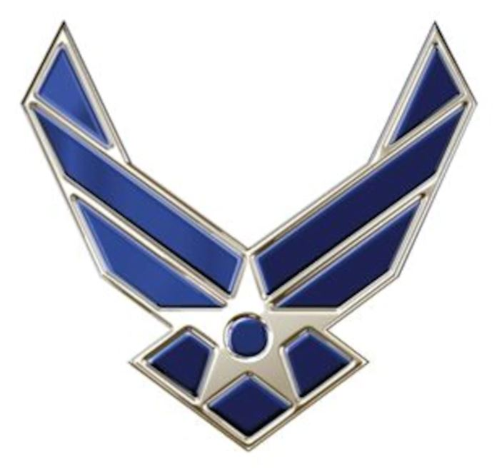
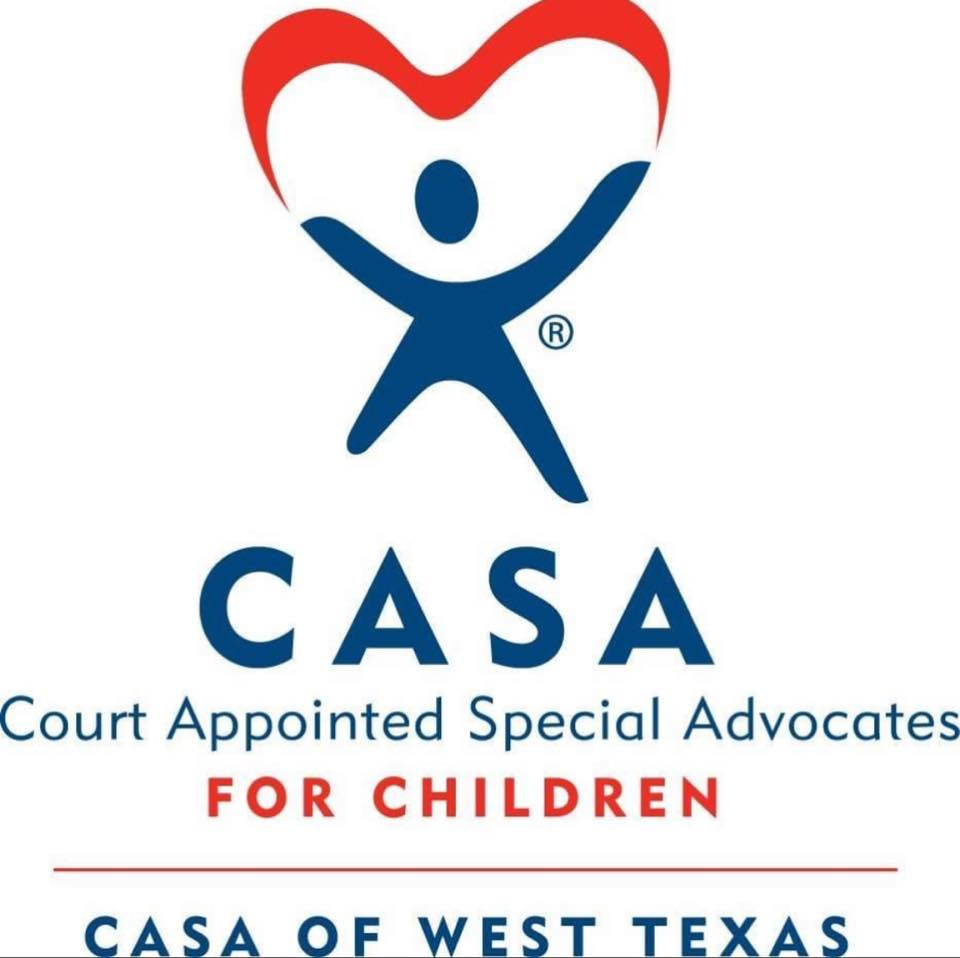
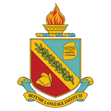

Junior League of San Angelo
Something that I have loved doing since a young age is volunteering. I recently joined a local volunteer group in San Angelo that meets every two weeks. SO far we have provided food for a food bank, worked at a food pantry, had a story walk, and did a photoshoot for dogs who need to be adopted from a local shelter. In December, we will be designing a float for the local parade.
Watching True Crime

Joe Kenda: Homicide Detective
I have always been interested in true crime shows and pod casts. I grew up watching Forensic Files and have seen every episode. I also love shows like Unlikely Suspect and Southern Gothic crime. The picture about is of Joe Kenda who is one of the most successful homicide detectives in the United States.
Hanging out with my family

My son at his sand table
I greatly value spending time with my family. My mom and dad live right down the street from me, therefore I try to see them everyday. My husband just moved in to our house about a month ago after being seperated from us due to work reasons. I also have shared custody of my son. He is my mini me and full of personality. The nice part about being in Texas is that we can play outside most of the year and never get cold or rained on. Soon, he will have a little sister to play with while he is at my house.
Experience
My Career

Air Force Symbol
I've been in the Air Force for 5 years. During these 5 years, I have been stationed across the United States. I have also worked three seperate jobs. My first job was as an all-source intel analyst The next was as a Russian linguist. Now, I teach Russian to new students in the Air Force and Navy.
CASA

CASA logo
Being a part of the Air Force requires you to be a well-rounded individual. My job expects me to take on leadership opportunities outside of the work place. One of these positions that I decided to take is as a CASA (Court Appointed Special Advocate). In the state of Texas, I am assigned to a child who has entered the foster care system and I advocate for their interests both outside and inside the court room. I also go visit my CASA kids monthly to check on them and see if they could benefit from any other services that the state could provide.
Other Education pursuits

Defense Language Institute - Foreign Language Center Insignia
The Air Force also requires that I continue my education. I currently hold 2 Associate's degrees. One in Russian and another in Military Studies and Technology. I am currently pursuing 3 more degrees. One is this Bachelor's from Bellevue University. Another is a Bachelor's in Russian from the Defense Language Institute. I am currently one class away from finishing that degree. I am also one class away from receiving my Instructor of Technology & Military Science (ITMS) Degree.